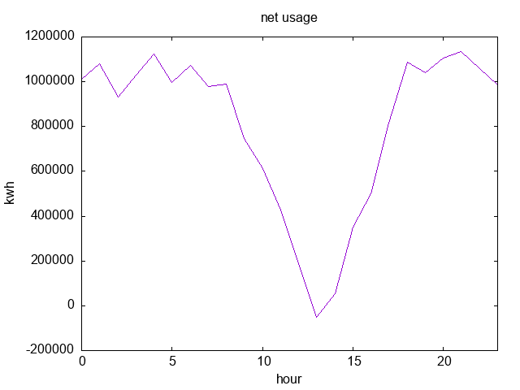
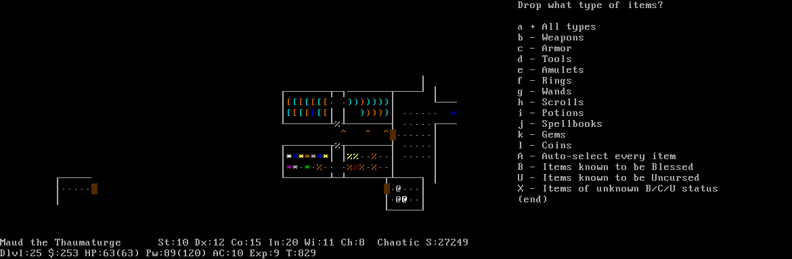
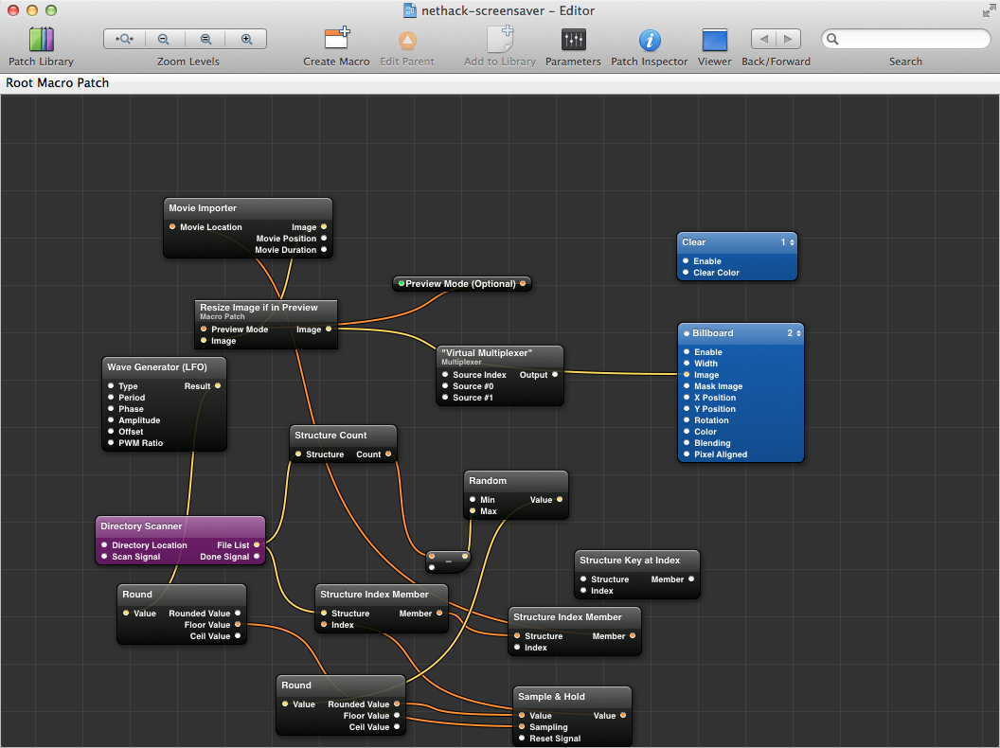

computer science, math, programming and other stuff
a blog by Christopher Swenson
2026-10-28
In ~1997, there was a group of public domain x86 assembly language source files called Assembly Snippets, or ASNIP, that was passed around various BBS download lists; it was collected by a fellow teen programmer named Tenie Remmel. I remember reading through them and leveling up my assembly language skills. I've kept a copy for the past 30 years (and it is still available in various places, though I think somewhat forgotten).
But, they aren't quite as useful as-is, so I had Claude forge them into a web archive, complete with a live assembler and embedded DOSBox so that they can be enjoyed in their original form.
Take a look! If you were around then, this might conjure up some memories.
Here is one of my favorites, a 3D landscape generator: https://swenson.github.io/asnip40/#etc-rotscape-rotscape-asm.
(Source is at https://github.com/swenson/asnip40.)
2026-10-06
When I was working on Caliptra, an open source silicon root of trust, I needed a Rust RISC-V disassembler to embed in our emulator to help with debugging. There was some Rust source code out there (such as Oxide Computer Company's disc-v source) but it was unlicensed, not published as a crate, and out of date. So at the time, I just redid the work of converting the same underlying C library to Rust (with some automation, but mostly by hand), and let it sit in the Caliptra's repositories, as I never really had time to polish it and publish a crate, and the Caliptra project probably didn't want to maintain that crate.
Fast forward to now, when I potentially need that same disassembler again, but still no great RISC-V disassembly crate exists. But! The Caliptra source I made before is open source! I can just fork it, clean it up a bit, and repackage it, and I can publish it myself (with appropriate attribution and licensing).
In the age of AI, there are far fewer excuses for not cleaning up that code, publishing it, and keeping it up-to-date. As the Oxide folks would say, let's use the AI tools to add more rigor and maintainability to our open source.
Now live at https://crates.io/crates/disc-v/ -- many thanks to the folks I worked with on the Caliptra project for all of the work done on that open source module.
2023-08-05
I live in Oregon, and Pacific Power is my only choice for providing electricity.
I put solar panels and a battery on my house a few years ago because (a) they're cool,
(b) they are useful in emergencies, and (c) theoretically they will save me money in the very long-term
(I calculated initially about 10–15 years to get back my investment).
Recently, Pacific Power has listed a few pilot programs and options for having a variable cost for electricity as an option.
The default "schedule", as it is called, is schedule 4: a flat rate at all times, which right now is
$0.11911 (USD) per kWh. This is not terrible by any means.
The new options provided have different rates at different times of the year and day.
In total, my options are, all in units of dollars per kwH, and excluding other costs:
- Schedule 4 (current, default): 0.11911 flat rate.
- Schedule 4 ("choice"): 0.11911 base rate, 0.06124 extra cost during "peak" hours, -0.01125 (credit) during "off-peak" hours. Peak hours are defined as: 4pm to 8pm in April through October, during weekdays and non-holidays, and 6am to 10am and 5pm to 8pm for November through March during weekdays and non-holidays. Note that these terms are poorly defined (what holidays? Are the ranges inclusive or exclusive? etc.).
- Schedule 6 ("residential time-of-use pilot"): 0.26181 peak (5pm to 9pm), 0.08121 all other times.
At a glance, knowing that I have solar generation and battery backup, I might be tempted to switch to one of these plans.
But which? How much money would I save?
Luckily, I have about a year's worth of energy usage data for my household in Prometheus,
including how much I sold back to Pacific Power, so I don't have to guess.

So, I wrote a quick Python program that simulated how much each power plan would cost me: it runs through every data point, estimates about how much power was used since the last data point, and accumulates the cost according the plan rules.
I ran through a few different assumptions about what were meant by the time ranges, and ignored holidays (since Pacific Power doesn't define what holidays they follow anyway), but the gist was essentially:
| Schedule |
Cost |
| 4 |
$2,295.67 |
| "Choice" |
$2,367.12 |
| 6 |
$2,296.90 |
Changing some of the various assumptions shifts the amounts by a few dollars, but not significantly.
With a few behavior changes, like modifying how the AC and heating in the house are used in certain seasons, it might be worth switching to one of the other schedules.
But, I wanted to see what the hard numbers are for what my household's current behavior is, rather than what it could be.
tl;dr: it's not worth switching for me. It's probably worth switching for many people though, and it might be worth switching if you can be trusted to modify your own behavior consistently.
2022-05-07
There are a few points I've learned about designing JSON APIs over the years, and I've had a hard time finding articles that pinned down this advice. So, here are a couple of design tips for JSON.
Don't give semantic meaning to object keys
The keys themselves in a JSON object should not give signifiant information.
What do I mean? Here is a JSON object whose keys have semantic meaning from an endpoint that is meant to give a list of movements and actions for a robot to take.
{
"left": "5m",
"forward": "10m",
"grab": "left"
}
At a glance, this seems nice and compact. However, ask yourself: are these actions ordered? Do I need to move left, then forward, then grab? What if I want to repeat an action, like left, forward, left?
While it is technically valid for JSON to contain such repetitions and ordering, such as in:
{
"left": "5m",
"forward": "10m",
"left": "6m",
"grab": "left"
}
To parse this correctly will be tricky and non-standard in every language.
Most parsers will treat this object as identical to:
{
"forward": "10m",
"grab": "left",
"left": "6m"
}
(although it is not clear which of the left actions will "win").
In addition, it can be more difficult to parse this object even if there is no need to preserve repetitions or ordering. In many languages, you might be forced to deserialize the object into a generic map or dict, which can lead to more error-prone code.
Instead of assigning semantic meaning to the keys, it is better to use an array with all of the objects being of the same type. This way you can enforce ordering, can have duplicates, and make it easier to parse.
Also, what if you wanted to have two arguments to an action, like specifying which arm to grab with and how much pressure? Wit the above format's compactness, it might be difficult to extend in a backwards-compatible way.
🚫 NO
{
"left": "5m",
"forward": "10m",
"left": "6m",
"grab": "left"
}
✅ YES.
{
"actions": [
{ "action": "left", "argument": "5m" },
{ "action": "forward", "argument": "10m" },
{ "action": "left", "argument": "6m" },
{ "action": "grab", "argument": "left" }
]
}
It may be more verbose and larger, but it is more extensible, easier to parse, and can preserve order without relying on tricky JSON parsing.
Your top-level response should always be an object
You may be tempted to make the top-level response for a list operation be an array, but it is critical that it always be an object.
This is because, in the future, you may want to return additional information about the list itself: paging information, the kinds of things in the list, dates, etc.
It is always safer to add additional keys to an object than to fundamentally change an endpoint from an array to an object.
🚫 NO
[
{ "a": "b"},
{ "a": "c"}
]
✅ YES.
{
"values": [
{ "a": "b"},
{ "a": "c"}
]
}
2022-01-25
In 2008, I wrote and published a book called Modern Cryptanalysis, a technical book
on cryptography and code breaking.
It's been about 14 years since Modern Cryptanalysis was published.
It's had a good run, but it's been out of print for a while now.
As such, I'm releasing it for free!
I've made some very small changes to clean up known errata and to reformat it for US Letter paper, but otherwise I've left it essentially as the 2008 version.
Enjoy! Download here: Modern Cryptanalysis v1.1.
2021-12-10
For the purposes of this article, I am speaking of the "tech" industry in general (for companies of all sizes), especially for programmers, as that is where I have experience.
Hiring people fairly is impossible, and therefore, meritocracy is a myth.
(Here, meritocracy means the idea that you can identify and reward the "best" people.)
Why?
There is one simple reason for that.
(I am a mathematician, so bear with me here.)
First, the hiring process is binary.
At the end of the process, you either hire someone or you don't,
assigning them a value of 0 or 1.
This means you have assigned a 1-dimensional number to each candidate.
(Which makes sense, because mathematically you can only unambiguously, or fairly, you might say, compare 1-dimensional numbers.)
This means that, no matter the set of people that you have, you fundamentally have to compare them.
That is, you need to boil them down to a single number — 0 or 1 in the hiring sense, or to a more general real number if you want more granularity, like a number 1 to 5 or -1 to 1.
(Mathematically, this is similar to defining a total order or
metric space.)
The problem is: people are not a single number.
The fundamental theorem of people is: you cannot boil a person down to a single number.
Say that person A is a more reliable Python programmer than person B, but person B is more creative.
And Person C is in between A and B in programming ability, but learns quickly.
And Person D is a weak programmer, but can understand and destroy any technical problem.
And Person E is a slow coder, but can be trusted to document and test their code thoroughly.
And Person F tackles problems in an entirely different way.
Who is "better"?
The answer: no one can be objectively better than the others, in general.
Ultimately, who you hire should depend heavily on many other questions that are hard to quantify, and don't even entirely depend on the candidate: who is on your team now? Which people will work best with them, and with people you might hire in the future? Which person's strengths and weaknesses are complement the team as a whole?
None of these questions are truly objective or depend solely on the intrinsic attributes of the candidate.
The job of the hiring manager is to boil down all of these parts of the people into a single number: 0 (don't hire) or 1 (hire).
It is impossible to do this fairly and objectively for everyone.
That this is unfair and subjective is obvious to anyone who has been through the hiring gauntlet at most tech companies.
They use a variety of methods to try to measure candidates, such as takeaway programming problems, pair programming exercises, whiteboard coding, brain teasers and puzzles, favoring certain degrees, requiring years of experience, or looking at open source work.
Some people do well with one method or another, and some don't.
You can't fairly say that because someone is worse at a whiteboard under high pressure that they will make a worse employee, or that someone being excellent at a take-home problem will work well with the existing team.
The person at the whiteboard might simply be having an off day, they might not deal well being under the microscope of a high-pressure whiteboard interview, or even the person conducting the interview may not be able to guide them through the interview fairly.
Likewise, acing a take-home exam demonstrates some ability to solve problems in a certain scenario, but does little to show how well they communicate or work with others.
It all comes down to: all hiring processes are doomed to be unfair.
You should accept that, and come to terms with it.
Then, you should examine your hiring processes, make them as fair as possible,
and know exactly how they are unfair.
Only by understanding your own strengths and weaknesses as a company, hiring manager, or interviewer will you even come close to being able to hire people and set them up for success.
2018-02-06
Just a quick follow-up to a previous post on 32-bit assembly language programming for OS X.
I've had a fair amount of interest in this post, surprisingly, so I thought I would update it for the 64-bit Intel world we live in now.
The biggest change is that the calling convention now uses registers instead of the stack by
default, and we
use the r* 64-bit registers instead of the e* 32-bit registers.
A huge source of annoyance for me is the way we pass pointers to data.
Now, in macOS, it is necessary for local data pointers to relative to the instruction pointer,
which is most easily accomplished using rel your_data_here and using lea instead of a
bare mov.
This can also be accomplished using the DEFAULT REL directive, which says that
all addresses in lea should be rel.
BITS 64
DEFAULT REL ; RIP-relative addressing by default
;
; Basic OS X calls to glibc
;
; compile with:
; nasm -g -f macho64 malloc64.asm
; gcc -o a.out malloc64.o
;
; glibc stuff
extern _puts, _printf, _malloc, _free
; static data
section .data
hello_world_str db "Hello world!", 10, 0
int_str db "Address %llx", 10, 0
; code
section .text
global _main
_main:
; save registers and align stack
push rbp
push r12
push rbx
lea rdi, [hello_world_str]
call _puts
mov rdi, 16
call _malloc
; check if the malloc failed
test rax, rax
jz fail_exit
mov rbx, rax
xor rax, rax
mov rsi, rbx
lea rdi, [int_str]
call _printf
; print "A\nB\n..."
mov [rbx], word 0xD41 ; 'A\n'
mov r12, 10
_loop:
mov rdi, rbx
call _puts
inc qword [rbx]
dec r12
jnz _loop
; free the malloc'd memory
mov rdi, rbx
call _free
xor rax, rax
pop rbx
pop r12
pop rbp
ret
fail_exit:
mov rax, 1
pop rbx
pop r12
pop rbp
ret
The output should look something like this:
Hello world!
Address 100200000
A
B
C
D
E
F
G
H
I
J
2018-01-14
This weekend, I wrote a quick email application called Friendship API.
It solves a problem that I have: I am just terrible at staying in touch with my friends via email.
This is a shame: email is really a great tool for keeping in touch.
Friendship API works like this: it uses ContextIO to look at people you interact with, filter out what looks like spam and business email, and send you a weekly email reminding you that you owe a person an email.
There's no account or password to manage: the weekly emails contain action links to ignore certain people in the future, generate another reminder, and cancel your subscription.
Hence, I use the term "email application".
There's also very little storage we have to do: basically, we keep track of email addresses of people who sign up, their ContextIO tokens, what recommendations we send out, and a list of email addresses that the people want to ignore.
If they cancel their subscription, we revoke our ContextIO tokens.
Why Python? The Stack
It's all built on Python 2.7. Why Python? Because there are a lot of great libraries and utilities that I can leverage to help me write the app quickly (over the weekend).
Sadly, some of the stack was still not ready for Python 3+.
- ContextIO: to do the extremely hard work of connecting to people's email accounts. Plus, they have a great Python API.
- Mailgun: to send emails, which has a dead-simple RESTful API.
- Flask: a straightforward way to build simple web APIs.
- Celery: a wonderful Python-based task queue system.
- SQLAlchemy: a robust way to deal with SQL databases.
- Heroku: an easy way to host the email application.
- Amazon S3: an easy way to host a simple static website.
- ThemeForest: a cheap way to get an website theme that looks good.
- Diet Dr Pepper: my choice of caffeine to keep me typing throughout the weekend. :)
Massive thanks to the hard work of those who wrote the stack I stand on.
The Process
How does one go about writing an app like this after getting the idea and setting
aside a spare weekend? Well, here's the process I followed at least:
- Outline in your head (or write down) the features that you need to launch with.
- Talk it over with someone.
- Sign up for all of the accounts you might need and don't already have (in this case, the ContextIO developer account).
- Write a simple program to prove that the hard things are possible: in this case, that is reasonable to use ContextIO to get the data we need, and then to generate sensible recommendations.
- Use Celery to make the program calls asynchronous.
- Write a simple Flask app that calls into that program.
- Use RequestBin to capture the ContextIO callback, so you know how to capture the authentication token when someone signs in.
- Write the Flask endpoints to generate a ContextIO signup session, and the Flask endpoint to capture the ContextIO callback information, and process based on that.
- Hook up the recommendation function to send out an email.
- Write a barebones web page that calls out to your web site.
- Setup hosting for everything.
- Have someone who isn't you test out the flow.
- Write the rest of the functions for your bare minimum features.
- Theme the static site.
That was fun!
Future Improvements
There are a few more things that would be nice to do for the application.
- Better recommendations. There's still a lot of work that could be done to improve recommendations:
- Using past recommendations to influence future recommendations.
- Adjusting the metric used to pick who to recommend.
- More advanced filters to differentiate business, spam, and friendship conversations.
- Adjusting the frequency of recommendations. It's currently hardcoded to one week per email.
- Better-looking recommendation emails.
- Suggest topics of conversation. We could pick topics randomly, or we could try to analyze past emails, perhaps.
- Handle people with multiple email addresses. Currently, the application keys off of email
addresses alone, so it can suggest someone whom you might be corresponding with regularly
if you are doing so with a different email address.
2018-01-14
I'm an armchair fan of NetHack and other roguelikes, though I don't play them too much.
I've always wondered why there wasn't, say, a NetHack screensaver that would just play through the game, since it seemed to be ripe for screensavering.
I'd found some pieces of tools that might do the job around the Internet: TTY "recordings" of NetHack ascensions (essentially, replaying through the terminal sequences while they are playing), pyte (a Python terminal emulator), and images2gif (a mostly working animated GIF maker).
It's almost there, so I wrote the missing piece that takes the screen buffer (as a matrix of character codes) and converts it to an image using an old DOS bitmap font, and then all of the glue code to make it all work together.
I sped up the results by 5× or so, and then run the whole thing through ImageMagick in the end to shrink the animated GIF.
I open sourced the whole thing as ttyrec2gif. It produces nice GIFs like:

There's one last piece: how to actually turn this into a screen saver.
In OS X, it's a matter of writing a little Quartz Composer program to randomly pick GIFs from a directory and play them as movies. This has hard-coded paths in it, because I haven't figured out how to make OS X screen saver configuration parameters, so I'll just post a screen shot of what the program looks like:

(Having Quartz pick a random GIF and then reload and pick another one after 5 minutes is a fun challenge. The best solution I came up with involved using a wave generator that, when rounded, would trigger an event only when it reached its apex, and this triggered a sampler to resample and pick a new random GIF. Kind of a Rube Goldberg way of doing it, but it was fun.)
Anyway, at the very least, there are some cool GIFs out there to look at now.
I'm considering doing a big run and converting a more runs into GIFs, but it's very time-consuming (it takes many hours to convert a game to an animated GIF for now).
2015-04-26
When browsing through some stack traces doing Go development, I noticed that Go had done something rather
clever in their codebase: on x86-64 processors, they used
the AES instruction set
to build a hash function.
The more I've thought about it, the more this is potentially quite brilliant.
AES, the block cipher, compounds multiple rounds of mixing data together, shuffling bits around, and
transforming it.
For the past several years, all Intel and AMD processors have supported doing an AES round in
a single instruction.
Hashing and random number generation use the same sort of principles as AES is based on: basically,
shuffle bits around and transform them.
AES gets cryptographic strength by doing this many times in a row (usually 10+).
However, if we are building a hash table or generating random numbers for simulations (or other non-cryptographic uses), then we don't need the full cryptographic strength of AES.
But, we can still leverage the AES instruction set to build some fast random number generators and hashes.
For starters, I've gone ahead and written an AES-based random number generator that performs a single round of AES as its core, and iterates to produce more random numbers.
In practice, it is about twice as fast as the Mersenne Twister.
I think that the biggest reason that most people haven't done this is that it's a relatively new feature, and
doing CPUID detection to make sure that the AES instruction set is available at runtime is kind of annoying.
At the very least, this library has those pieces already written.
Some caveats:
- The quality of random numbers produced is not as high as the mersenne twister (they don't quite pass the dieharder test suite).
They're not terrible either; they're just not as good.
- This only works on relatively modern x86-64 processors.
To detect support, you can use the included
cpuid.h to call intel_has_feature(INTEL_FEATURE_AES)
to see if the CPUID instruction indicates support for the AES instruction set.
- It's very probably that more performance or better numbers could be created.
I used a fairly straightforward seed and random number generator.
I've also been experimenting with an AES-based hash function that is extremely similar to this.
There is an equivalent test set to the Diehard tests for hash functions, called SMHasher.
Unfortunately, my preliminary results are not encouraging: AES instructions are possibly slower
than the Murmur3 algorithm when tuned to pass the SMHasher tests.
With only 1 or 2 rounds of encryption used, my AES hash function does not seem to pass the
SMHasher suite, though it does after 3 or 4 rounds.
Unfortunately, these extra rounds make the performance not quite as competitive.
I'm still tinkering with the AES-based hash function though to try to make it faster
or hash better. I'll report back with my findings.